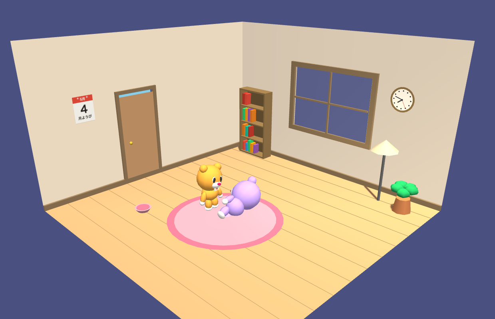
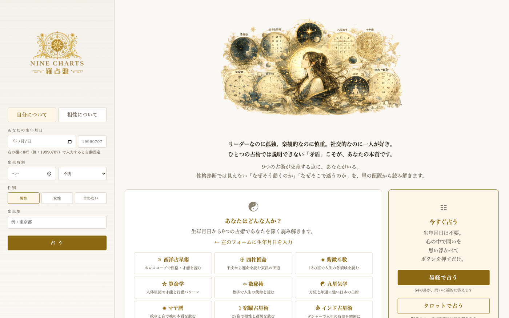
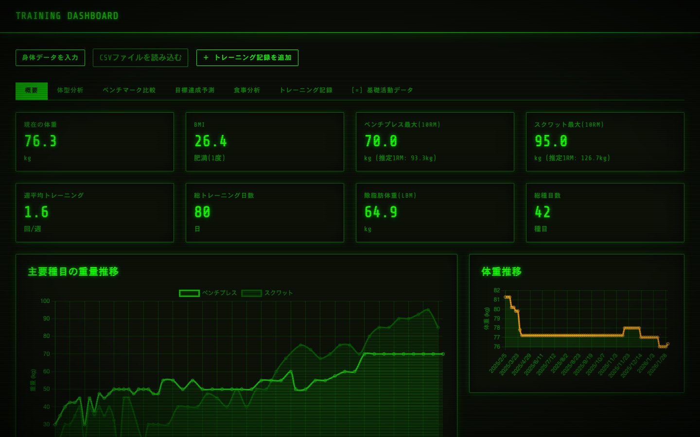
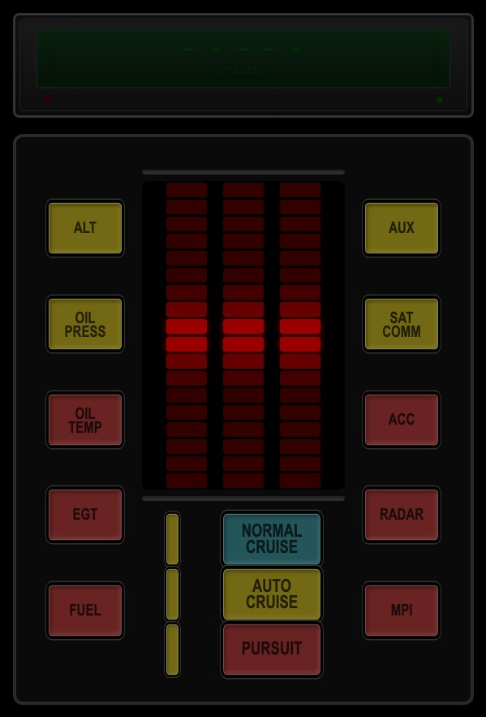
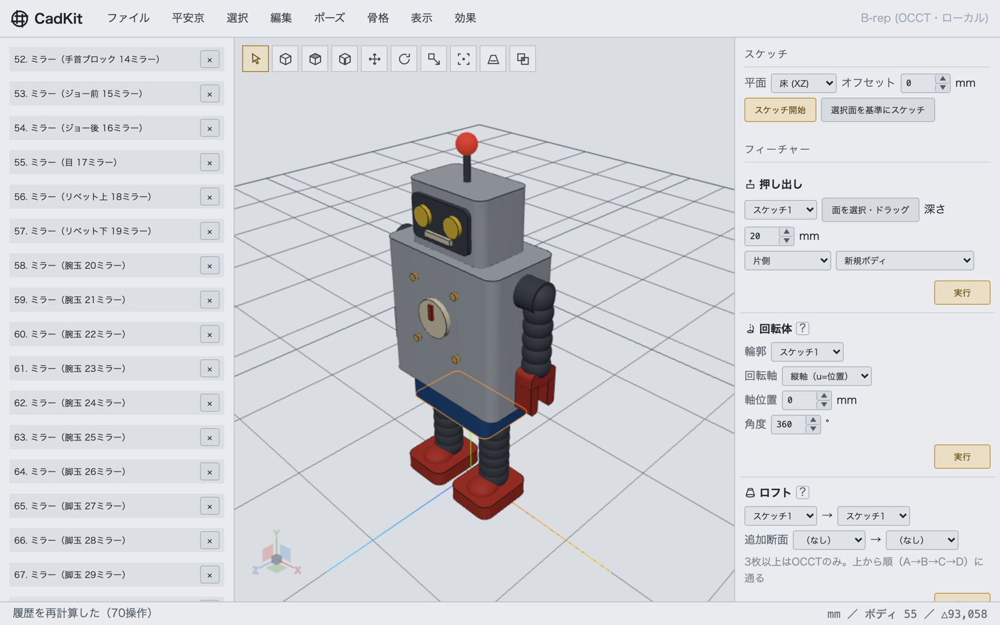
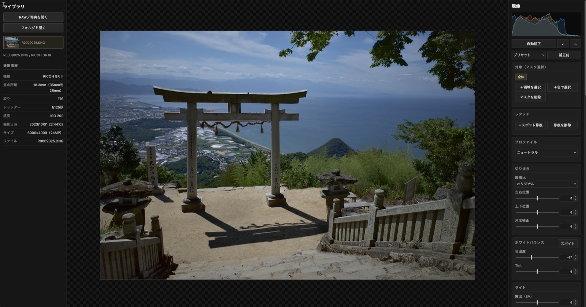

Selected Work — 06
AIと、つくる速さ
手を動かして、確かめる
生成AIで試作のコストが下がった、と言われる。それが本当かは、自分で作ってみないと分からない。デザインツールを開かず、コードを書く前提で、思いついたものを作り続けている。
Background
作れるようになると、何が変わるのか。
デザイナーとして30年近く、絵は描けてもコードは書けなかった。作りたいものがあっても、誰かに頼むか、諦めるかだった。2025年、生成AIと一緒にコードを書くようになって、その前提が崩れた。思いついた夜に動くものができる。
ただ、「速く作れる」だけなら道具の話で終わる。知りたかったのは、作る速さが上がると考え方が変わるのかということだった。それを確かめるために、仕事とは関係のないものを、思いついた順に作っている。
Work 01 — PetMessenger
1997年の、あの気持ちをもう一度。
ポストペットに癒された記憶がある。メールを運ぶペットが部屋で勝手に動いていて、それを見ているだけで嬉しかった。あの気持ちは、どこから来ていたのか。Three.jsで3Dの部屋とペットを作り、Firebaseでメッセージを運ばせて、自分で確かめてみた。
作ってみて、嬉しかったのはペットが「勝手に動いている」ことだと分かった。おやつをやる、なでる、ボールを投げる、といった操作はどれも副次的で、放っておくと窓を見に行ったり、ラグで腹這いになったり、伸びをする。それを横目で見ている時間が、あの気持ちだった。

自分が1997年のユーザーだったので、自分で1週間使った。何をしているときに嬉しいかをメモした。
「勝手に生きている」感じが嬉しい。機能を足すほど、その感じは薄れた。
Work 02 — 羅占盤
9つの占いを重ねると、矛盾が出る。
西洋占星術、四柱推命、紫微斗数、算命学、数秘術、九星気学、マヤ暦、宿曜、インド占星術。生年月日を入れると9つの占術を同時に計算し、結果を重ねる。狙いは、占術同士の矛盾を見せることだった。「リーダーなのに孤独。楽観的なのに慎重」。ひとつの占術では説明できない食い違いが、その人らしさとして残る。
作ってから最初に困ったのは、結果が長すぎて読まれないことだった。矛盾のまとめ、タグライン、性格、生き方、物語、処方箋、人格の6層、相性。全部が同じ強さで縦に積まれていた。情報は減らさず、最初に何を見せるかを決めただけで、読まれ方が変わった。

何人かの生年月日で結果を出し、「要するにあなたは」の1行が本人に当たるかを聞いた。当たらない組み合わせを直した。
密度は高くていい。ただし優先順位が無いと、密度はただの長さになる。
Work 03 — Training Dashboard
自分の体のデータで、試す。
パーソナルトレーニングの記録を可視化するダッシュボード。概要・体型分析・ベンチマーク比較・目標達成予測・食事分析の5タブで、CSVを入れると更新される。データがあると何が言えるのか、自分の体を使って確かめている。

Work 04 — KITT
デザインツールを、一切開かずに。
PhotoshopもIllustratorも開かず、UIデザインを一切せずにどこまで作れるか。1980年代のドラマ「ナイトライダー」の車載ダッシュボードをモチーフにしたWebラジオ。Web Audio APIの音声ビジュアライザー、CRT風のグロー。ここまで行けるなら、「コードを書く前提のデザイン」は現実になっている。

Work 05 — BezierKit・CadKit・RAW現像
描く道具から、立体、写真の道具まで続けて試す。
仕事では、プロトタイプを作りながら、どんな時にどんなニーズがあるかを確かめて、アイデアやデザインを考えていく。AIを使うと、この試しがかなり早く回る。ここでは、デザイナーが毎日使う道具を自分で作れるかを、続けて試した。
最初は、イラストレーターのようなものをAIで作れるのではないか、と考えてBezierKitを作った。操作の履歴を再生すると、図ができていく順番がそのまま見える。
BezierKitで線が描けたので、それを押し出せばCADになるのでは、と試してCadKitを作った。CadKitでブリキのロボをモデリングしたら、そのロボを動かせるのでは、と思って動かしてみた。このロボは、平安京の町を歩く「鉄の童」になっている。

イラストレーターのようなものが作れるなら、画像の道具はどうか、とRAW現像ツールも試した。RICOH GR III のRAWを開いて、露出や色温度の補正、範囲や色で選んだ所だけの補正、スポット修復までできる。

What This Showed
作る前に、要るか要らないかが分かる。
ここまで作って分かったのは、想像したアイデアをAIで一度可視化してしまうと、本格的に開発する前に、それが必要なのか不要なのかが見えるということだった。以前は作る前に考え切るしかなく、作ってから「違った」と分かることが多かった。PetMessengerで機能を足すほど嬉しさが薄れたことも、羅占盤の結果が長すぎたことも、全部一度形にしてから分かった。
試作は、作るかどうかを決めるための道具にもなった。授業で学生に「まず空想で書いて、確かめて置き換えていこう」と言えるのは、自分が毎週これをやっているからだ。
「AIで想像したアイデアを可視化することで、本格的に開発する前に、必要なのか不要なのかが分かるようになってきた。」